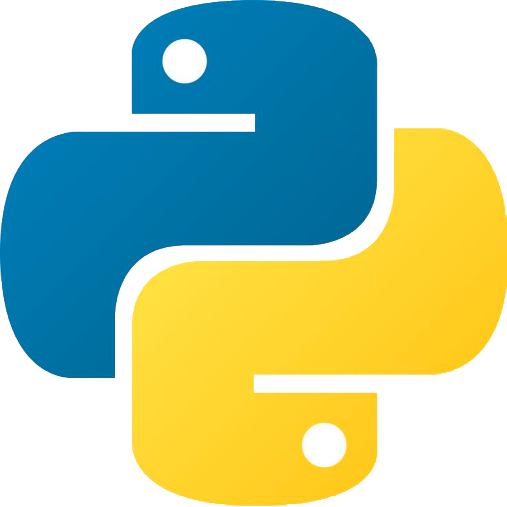
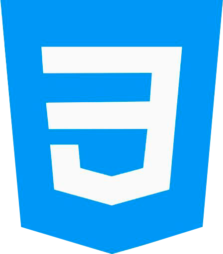
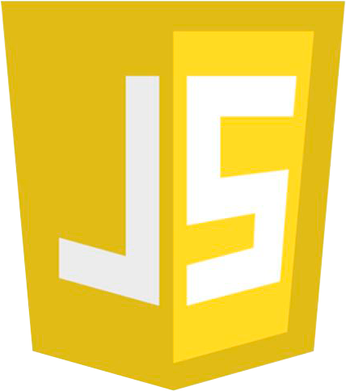
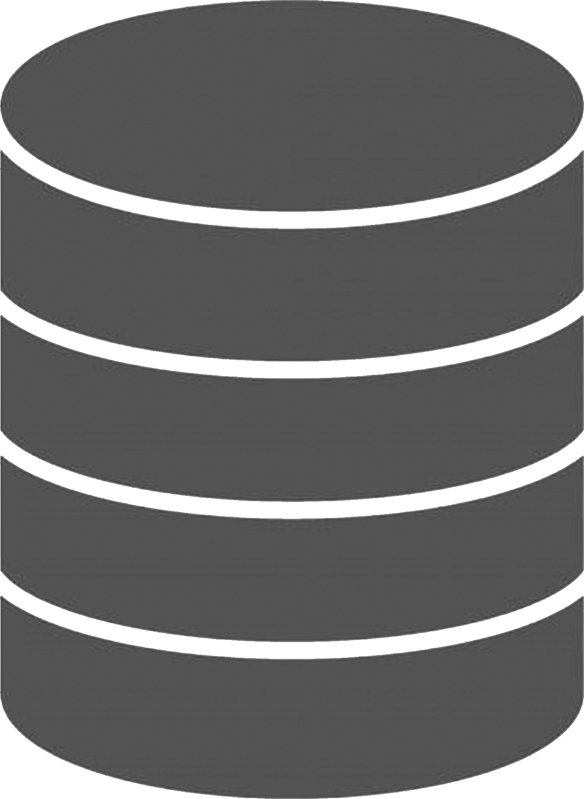
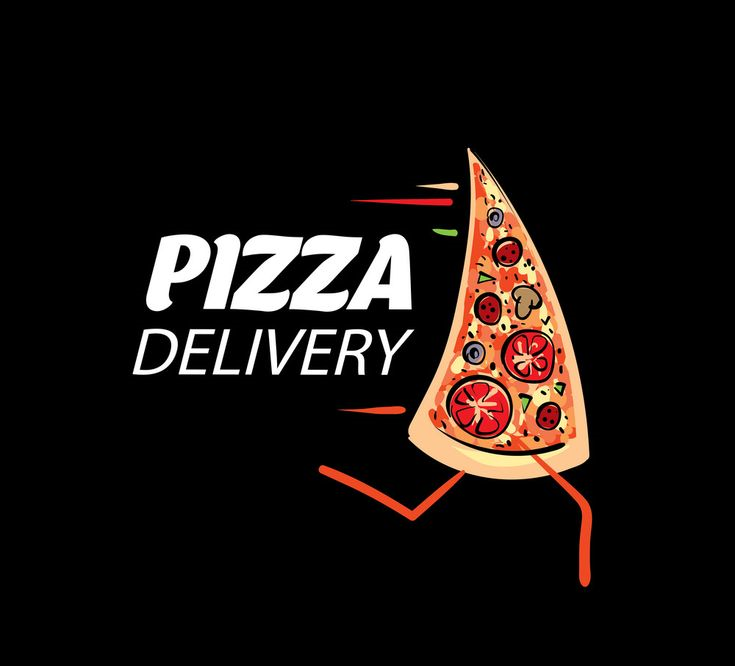
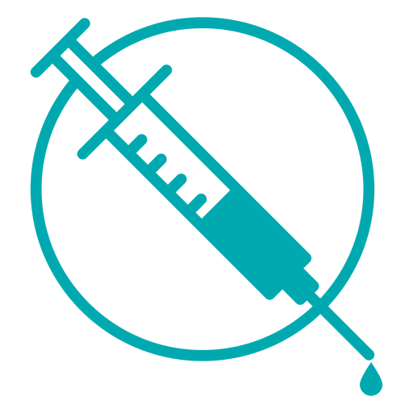

Soy Felipe Piña, un programador Jr. full stack con una gran pasión por la tecnología y el desarrollo de software. Me motiva enfrentar desafíos y encontrar soluciones innovadoras a problemas complejos.
Mis habilidades incluyen Python, HTML, CSS, JavaScript y SQL, así como un conocimiento básico de Sistemas Operativos.
Actualmente, estoy aprendiendo y aplicando metodologías ágiles como Scrum, XP y Kanban para mejorar la eficiencia en mis proyectos y optimizar el proceso de resolución de problemas.
Habilidades

Python
HTML

CSS

JavaScript

SQL
Proyectos
PizzeriaArgento

Pizza Argento es una plataforma de entrega a domicilio diseñada para mejorar la experiencia del cliente con un menú interactivo y pedidos rápidos. Desarrollada con Flask en el backend y HTML/CSS en la interfaz, ofrece una navegación sencilla. Además, permite a los administradores gestionar el catálogo y los pedidos en tiempo real, facilitando el control de productos y el seguimiento de los pedidos.
Ver proyectoCaso Dengue

Esta aplicación para el registro y gestión de casos de dengue en San Carlos permite clasificar los casos según los tipos A, B o C, almacenando y organizando la información de manera eficiente. Desarrollada con Flask para el backend y utilizando HTML, CSS y JavaScript para la interfaz de usuario, la plataforma ofrece una experiencia fluida y sencilla. Además, se integra con una base de datos para almacenar de forma segura los datos de cada caso, facilitando el seguimiento, análisis y la toma de decisiones en la lucha contra la enfermedad en la región.
Ver proyectoPortal Deportivo
Este portal deportivo ofrece un análisis completo de la Copa América 2024 tras su finalización, con estadísticas detalladas de equipos, jugadores y partidos. Desarrollado con Flask para el backend y HTML, CSS y JavaScript para la interfaz, cuenta con bases de datos que almacenan toda la información final del torneo para fácil acceso.
Ver proyecto